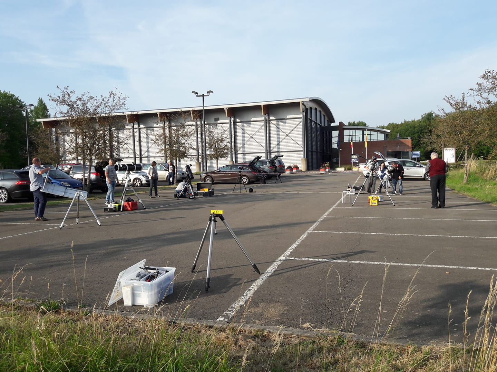

Teaching
- 2006 - 2007 - University of Namur, Belgium. Celestial Mechanics Laboratories for Master students
- 2006 - 2007 - University of Namur, Belgium. Programmation Laboratories for Master students
- 2014 - 2017 - University of Liège, Belgium. Astrophysics Laboratories for Bachelor students
- 2017 - to date - KU Leuven, Belgium. Bachelor and Master student projects in Astrophysics.
- 2019 - 2020 - KU Leuven, Belgium. Binary Stars class (B-KUL-G0I55A) with Prof. Hugues Sana.
Supervisions
PhD thesis
- 2014 - 2016 - University of Liège, Belgium - Co-supervisor of Françoise Raucq
- 2018 - to date - KU Leuven, Belgium. Co-supervisor of Gareth Banyard
- 2018 - to date - KU Leuven, Belgium. Co-supervisor of Calum Hawcroft
- 2017 - to date - KU Leuven, Belgium. Progress committee member of Julia Bodensteiner
Master thesis
- 2016 - University of Liège, Belgium. Examination committee member (reader) of Sophie Rosu
- 2018 - KU Leuven, Belgium. Examination committee member (reader) of Prem Kumar Bulusu
- 2018 - 2019 - KU Leuven, Belgium. Supervisor of Lukas van Riel
- 2019 - 2020 - KU Leuven, Belgium. Supervisor of Nimmy Samson Attipetty
- 2019 - 2020 - KU Leuven, Belgium. Co-supervisor of Soetkin Janssens
Outreach
With Yaël Nazé as co-promotor of my PhD, I was initiated early in my scientific career to outreach activities. Since that moment, I try to contribute and to promote Astronomy to the young generation and to anyone who is interested in Astronomy.
I participated to interactive astronomical exhibitions as the "Printemps des Sciences" organised everywhere in Walloon Region in Belgium tackling subjects such as exoplanets, massive stars or solar system. I was also involved in the school visits at KU Leuven to talk about spectroscopy to high school students.
Since 2015, I also participate to public engagement organized by the amateur club of Astronomy of Namur (
Astronamur) in Belgium.
I am dedicated to continue participating and probably organising similar outreach activities throughout my research career.